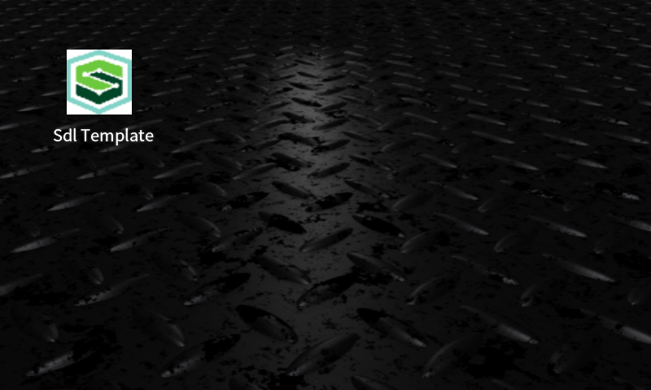

1. HMI Document¶
SDLBootCampのHMIドキュメント
1.1 openning画面¶
起動した時に表示される画面のため、特に操作することはない。
1.2 appList画面¶
coreから送られてきたappListを表示。アプリを選択するにはアイコンをタッチする。
1.3 template画面¶
UIのコマンド、SetDisplayLayoutによってtemplateを変えることでアプリ側から表示するものを自由に変えることができる。
- DEFAULT template
- MEDIA template
- NON-MEDIA template
- ONSCREEN_PRESETS template
- NAV_FULLSCREEN_MAP template
- NAV_LIST template
- NAV_KEYBOARD template
- GRAPHIC_WITH_TEXT template
- TEXT_WITH_GRAPHIC template
- TILES_ONLY template
- TEXTBUTTONS_ONLY template
- GRAPHIC_WITH_TILES template
- TILES_WITH_GRAPHIC template
- GRAPHIC_WITH_TEXT_AND_SOFTBUTTONS template
- TEXT_AND_SOFTBUTTONS_WITH_GRAPHIC template
- GRAPHIC_WITH_TEXTBUTTONS template
- TEXTBUTTONS_WITH_GRAPHIC template
- LARGE_GRAPHIC_WITH_SOFTBUTTONS template
- DOUBLE_GRAPHIC_WITH_SOFTBUTTONS template
- LARGE_GRAPHIC_ONLY template